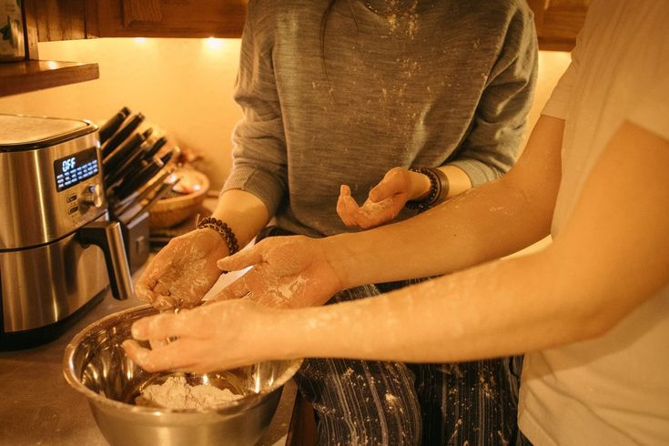
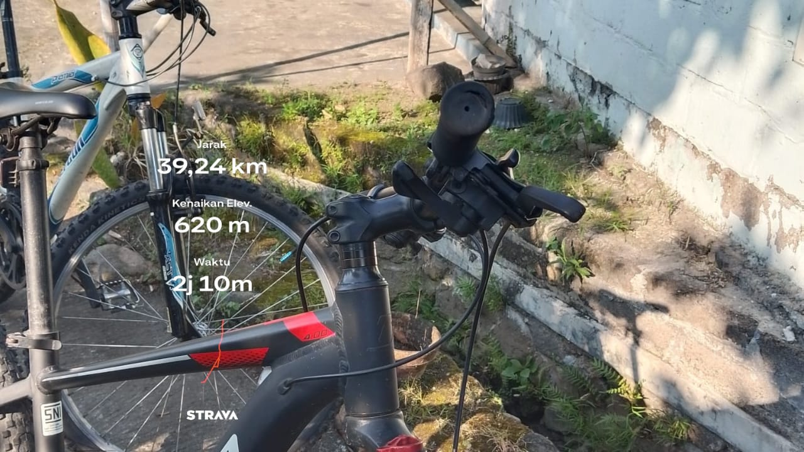
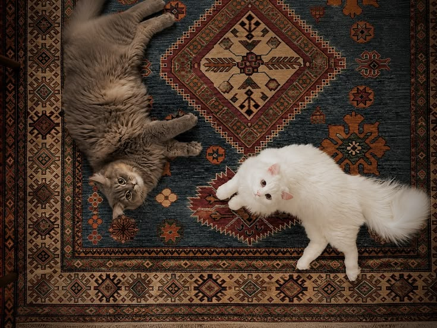
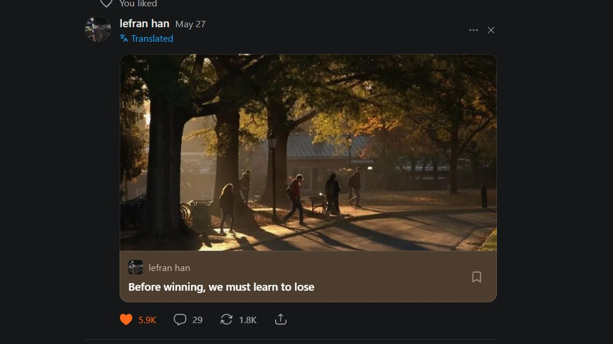

|
 |
"Bare minimum manusia: Memasak."Memasak itu bukan suatu keahlian khusus, tapi basic bertahan hidup.lihat selanjutnya
Topik ini sebenarnya sedang hangat dibicarakan, ada sebagian orang
yang menganggap memasak itu adalah kegiatan yang seharusnya hanya dilakukan oleh Perempuan.
wajar jika ternyata gagasan itu
mengundang banyak argumen yang menentang dan menimbulkan salah paham baru, "Perempuan juga
ga harus bisa masak."
jika ditanya bagaimana pendapatku, keduanya salah besar.
|
|
 |
"Memilih Bersepeda daripada banyak bicara."Tidak semua isi pikiran harus dibicarakan, dan aku memilih mengambil tindakan.lihat selanjutnyaDalam hidup, ada hari-hari berat yang membuat kita merasa terlalu lelah, bahkan hanya untuk sekedar bicara dan bercerita. Aku pun begitu. Terkadang aku lebih memilih menerima ajakan teman untuk bersepeda daripada mengeluh tentang hal-hal tidak menyenangkan yang terjadi. Tiap kilometer jalanan kota yang kulewati membawa ketenangan tersendiri. Jalanan kota yang punya berbagai cerita, suara bising sekitar yang bercampur dengan obrolan terasa cukup menenangkan. Bagi kami, bersepeda bukan sekadar hobi, melainkan jembatan untuk menjaga persahabatan, sebuah ajakan sederhana yang selalu berhasil membawa kami kembali berkumpul. Gelak tawa di sepanjang perjalanan menjadi pengingat bahwa semuanya akan baik-baik saja selama masih ada Tuhan, dan teman. |
|
 |
"Sosok teman yang hanya bisa minta makan"Walau cuma bisa minta makan, senang rasanya bisa berteman.lihat selanjutnyaWaktu kecil, orang tuaku kurang suka dengan hewan, terutama kucing. Menurut mereka, kucing itu kotor, nakal, dan membawa penyakit. Namun, pandanganku sangat berbeda. Bagiku, kucing adalah hewan yang polos, lucu, setia, dan sangat cocok menjadi teman. Seiring berjalannya waktu, pandanganku terbukti benar. Orang tuaku justru berbalik menjadi penyayang kucing dan mengizinkanku memelihara beberapa ekor di rumah. Semuanya bermula dari seekor kucing betina yang datang dalam keadaan hamil. Ia melahirkan 5 ekor anak, lalu jumlah mereka terus bertambah hingga menjadi 9 ekor. Dulu, aku sangat bahagia melihat rumah mendadak ramai oleh kehadiran mereka, tingkah lucu hingga menyebalkan mereka menjadikan suasana rumah berbeda seperti sebelumnya.Kini, hanya tersisa 4 ekor yang masih sehat dan panjang umur, sementara saudara-saudara mereka telah kembali menyatu dengan alam. Sedih rasanya ketika satu persatu dari mereka mencapai takdir batas hidupnya, namun setidaknya aku pernah dibuat bahagia dan tertawa ketika mereka hanya bisa minta makan tanpa membantu apa-apa. Tahun-tahun yang telah berlalu mengajarkanku satu hal, segala sesuatu yang datang pasti akan pergi. Setiap kehadiran memiliki tujuannya masing-masing, dan ketika tujuan itu telah tercapai, waktu akan membawa mereka kembali. |
|
 |
"Sebelum Menang, kita perlu belajar kalah."Karya tulisan seseorang yang berhasil membuat ku terdiam sebentar.lihat selanjutnya
Kenyataannya, kita perlu belajar berdamai dan menerima bahwa dalam hidup, selalu ada hal-hal
yang pada akhirnya bukan untuk kita. Kita perlu memahami bahwa tidak semua usaha berakhir sesuai
harapan, dan tidak semua yang kita inginkan memang ditakdirkan menjadi milik kita.
Tuhan tahu apa yang kita rencanakan, Tuhan tahu seberapa keras kita berusaha. Namun, Tuhan juga
tahu apa yang terbaik untuk kita, bahkan ketika akhirnya berbeda dari apa yang selama ini kita
harapkan.
|